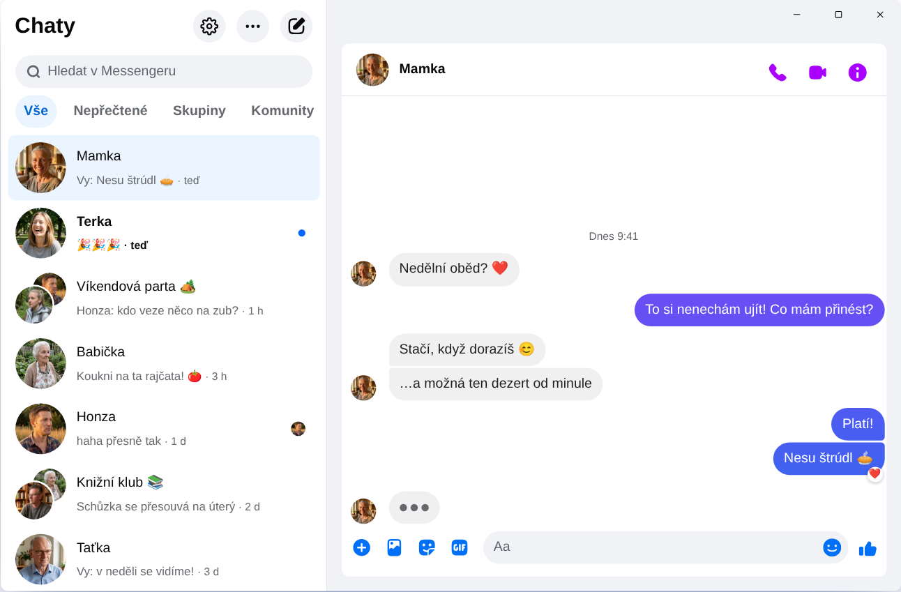

Chatpane / Windows
Aktualizováno v listopadu 2026
Jak mít Messenger na počítači v roce 2026
Meta 15. prosince 2025 vypnula aplikaci Messenger pro Windows a messenger.com tě teď přesměruje na Facebook. Tohle dnes funguje na počítači nebo notebooku s Windows 10 nebo 11.
Zdarma a open source · Windows 10 a 11 · Není to aplikace od Mety
Stručná odpověď
Oficiální aplikace Messenger pro počítač už neexistuje. Meta ji stáhla z Microsoft Storu a od dubna 2026 funguje Messenger na počítači jen na adrese facebook.com/messages, uvnitř Facebooku.
Pokud chceš mít Messenger ve vlastním okně, bez kanálu a Reels, Chatpane je bezplatná open-source aplikace pro Windows, která ukazuje jen tvoje konverzace. Je to nezávislý projekt, ne produkt Mety.
Pozor na „Messenger pro PC“ na stahovacích webech
Spousta starých návodů pořád radí hledat „Messenger“ v Microsoft Storu nebo stáhnout instalátor Messenger 2250.1 ze stahovacích webů. Nic tím nezískáš: je to přesně ta aplikace, kterou Meta v prosinci 2025 vypnula, a po spuštění tě jen pošle na Facebook.
Nezadávej heslo k Facebooku do programu ani na stránku, o které nevíš, odkud pochází. Pokud ti někdo nabízí „Messenger pro PC“ s vlastním přihlašováním, dej si pozor.
Co se stalo s Messengerem pro Windows?
V roce 2024 Meta nahradila aplikaci pro Windows zabalenou webovou verzí. V říjnu 2025 oznámila její konec a stáhla ji z Microsoft Storu, 15. prosince 2025 pak aplikace přestala fungovat. V dubnu 2026 skončil i messenger.com. Podrobnosti a data najdeš v článku Messenger na počítači skončil.
Tvoje možnosti
Jak používat Messenger ve Windows
Chatpane ve Windows
Chatpane otevírá stejný Messenger, jaký vidíš v prohlížeči, takže všechny tvoje konverzace, skupiny, hovory a fotky zůstávají na svém místě a synchronizují se s telefonem. Zmizí jen zbytek Facebooku.
- Jen Messenger. Kanál, Reels, Marketplace a vyhledávání Facebooku jsou skryté.
- Užitečná oznámení. Odpovídej, reaguj, označ jako přečtené nebo ztlum konverzaci přímo z oznámení, bez otevírání okna. Rodinná skupina ani zpráva od kamaráda ti tak při práci neutečou.
- Hlavní panel a systémová lišta. Počet nepřečtených zpráv na ikoně, spouštění spolu s Windows a možnost běžet dál na systémové liště po zavření okna.
- Soukromí. Skryj, že píšeš, skryj jména a fotky při sdílení obrazovky a blokuj analytické požadavky Facebooku (ve výchozím stavu zapnuto).
- Česky. Chatpane se řídí jazykem tvého počítače, takže jeho nabídky a nastavení jsou v češtině.

Jak ho nainstalovat
- Stáhni instalátor pro Windows. Pokud má tvůj počítač procesor ARM, vezmi instalátor ARM64.
- Spusť ho. Instalátory Chatpane pro Windows zatím nejsou digitálně podepsané, takže SmartScreen může zobrazit hlášku „Systém Windows ochránil váš počítač“. Klikni na „Další informace“ a pak na „Přesto spustit“. Chatpane stahuj jen z chatpane.app nebo z GitHubu.
- Přihlas se svým obvyklým účtem na Facebooku. Konverzace se objeví hned.
Nechceš nic instalovat? Přenosná verze (.zip) funguje bez instalátoru.
Časté dotazy
Otázky k Messengeru na počítači
Je Chatpane zdarma?
Ano. Žádná cena, předplatné ani reklamy. Je open source pod licencí MIT a jeho kód je zveřejněný na GitHubu, takže si ho může kdokoli prohlédnout.
Je to oficiální aplikace Messenger?
Ne. Chatpane je nezávislý projekt, který s Metou nemá nic společného. Zobrazuje skutečný Messenger z facebook.com/messages ve vlastním okně, takže tvoje zprávy dál procházejí Messengerem a platí pro ně podmínky Mety.
Funguje bez účtu na Facebooku?
Ne. Od dubna 2026 Meta dovoluje používat Messenger bez účtu na Facebooku jen v mobilní aplikaci. Na počítači potřebuje Chatpane i jakýkoli jiný způsob účet, který se může přihlásit na facebook.com.
Funguje ve Windows 10?
Ano, ve Windows 10 i 11. Chatpane používá Microsoft Edge WebView2, který je ve Windows 11 už součástí systému. Ve Windows 10 ho instalátor stáhne, pokud chybí.
Fungují videohovory?
Ano. Je to plnohodnotný Messenger, takže hlasové hovory i videohovory se otevírají ve vlastním okně, stejně jako na facebook.com.
Stáhnout Chatpane
Zdarma a open source. Stáhne se za pár sekund - má jen asi 4 MB.
Další možnosti: přenosný .zip · ARM .exe · ARM .zip
Starší Intel Mac? Intel .dmg
Kompletní seznam s kontrolními součty najdeš na
GitHubu
- nebo brew install --cask kristofferR/tap/chatpane